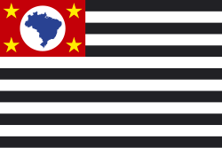

bem-vindo ao santinho.art
aqui você monta a sua cola eleitoral para 2026: os seis
votos, na ordem da urna, com o nome, o partido e a foto de cada candidato
aparecendo conforme você digita
alecrim dourado
dep. federal
9987
nada impresso: a sua cola vira um link, e você compartilha com
quem quiser
essa colinha é de oooutra pessoa!
mas agora ela também é sua, e você pode editar o quanto
quiser
no topo da tela tem as duas saídas: deixar assim, para
ficar com a cola como ela veio, ou limpar tudo e fazer a
minha, para começar do zero
deixar assim
limpar tudo e fazer a minha →
escolhendo qualquer um dos dois, a cola passa a ser sua e o
par desaparece
primeiro, o seu estado
a urna é diferente em cada estado: deputado federal, deputado
estadual, senador e governador são candidatos do seu estado, e só
aparecem se você estiver no estado certo. presidente é nacional e não
muda
então comece por aqui: toque em trocar estado, no rodapé,
e escolha o seu. os quatro cargos estaduais se revalidam na hora - se um
número não existir no novo estado, o card avisa

SPMG
trocar estado
a sigla e a bandeira no topo da tela mostram onde você está
depois, os números
toque num dígito e digite. ele fica marcado, recebe o que você digitar e
o cursor segue para o lado sozinho - dá para corrigir só um dígito no meio
do número, sem apagar o resto
os dois primeiros dígitos são o partido; o pontilhado marca
onde eles terminam
só os dois primeiros: voto de legenda
para deputado federal e estadual, digitar só os dois dígitos do
partido e parar ali é voto de legenda: vale para a bancada do
partido, sem escolher um nome
o card diz com palavras o que aconteceu, em vez de parecer
incompleto
e quando o número não existe
se o número não corresponder a nenhuma candidatura no seu estado, o card
mostra inválido - e continua editável e compartilhável.
nada é apagado sem você pedir
pode ser erro de digitação, pode ser candidatura de outro
estado - de qualquer jeito, é só corrigir o dígito
não sabe o número?
busque pelo nome. o resultado já entra no cargo certo, e você não precisa
saber de cabeça o número de ninguém
alecrim
alecrim dourado
9987
acentos e maiúsculas não importam, e nomes parecidos também
aparecem
por fim, compartilhar
o botão no topo manda a sua cola em três formatos de uma vez: o
link com os seus números, um texto para
colar na conversa e uma imagem no formato de stories
compartilhar
Minha cola eleitoral 2026 - SP
Dep. federal · 9987
Governador · 99
vem conhecer meus candidatos e fazer a sua também:
santinho.art/?uf=sp&df=9987…
14:32
quem receber abre a sua cola já preenchida - e pode editar,
como você está fazendo agora
e a sua privacidade
?uf=sp&df=9987
servidor
os seus números ficam na barra de endereço e não saem do
aparelho
este site não tem servidor. são arquivos estáticos: a
página roda inteira no seu navegador e é ele que lê a base do TSE
é por isso que compartilhar é só mandar o link: ele já carrega os seus
números
não há login, conta, cookie de rastreamento nem analytics. a única coisa
guardada no seu navegador é a preferência abaixo, de não mostrar esta
ficha de novo
e quem envia é você: o link, o texto e a imagem saem pelo aplicativo
que você escolher
de onde vêm os dados
TSE
arquivos
estáticos
seu
navegador
a base oficial vira arquivos estáticos, e é o seu navegador
que os lê. não há servidor no meio
- candidaturas, partidos e fotos
- TSE, Dados Abertos - conjunto
consulta_cand_2026
(dadosabertos.tse.jus.br)
- redes sociais dos candidatos
- TSE, conjunto
rede_social_candidato_2026. é declaração do
próprio candidato; quando ele escreveu só o usuário, sem link, o
endereço é montado a partir dele
- cores dos partidos
- Wikidata, propriedade
P465
(wikidata.org), com
curadoria manual sigla por sigla
- bandeiras dos estados
- Wikimedia Commons
a ordem dos cargos é a da urna. nada aqui é ranking:
as listas saem em ordem alfabética, o site não sugere candidato e não
ordena por relevância. os exemplos desta ficha usam números e nomes que
não pertencem a candidato nenhum